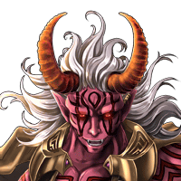

ゼブラ
こ…のまま倒れるわけには… いか…ない…。


ゼブラ
この空中要塞を破壊して 貴様らを道連れにしてくれるっ！！
グラ爺
それがわからんお主は 所詮二流の神と言ったところかの。
グラ爺
ゼブラが消えたことで、空中要塞が 再び眠りにつくかもしれんからの。
セリア
も～！ 女神ならもうちょっと 着地も丁寧にやりなさいよ！
グラ爺
セリアちゃんのオシリの大きさなら 大丈夫と思ったんじゃないのかの？
セリア
グ、グラデ……グラ爺様！ なんでこんな所に！！
カル
っていうか、 グラデンスの爺さんじゃねーか。
グラデンス
せっかくワシが好々爺として ティリスちゃんと仲良くしとったのに
カル
召喚院のトップらしく 召喚院でちゃんと働いてろよ。
ティリス
へ～、よくわからないけど グラ爺ってやっぱりエラかったんだ。
ティリス
ただの変な お爺ちゃんじゃなかったんだね。
セリア
あんた、グラデンス様の正体がわかったなら もっと丁寧に話しなさいよ！
ティリス
それに人間の世界のことは よくわからないけど
ティリス
どちらかというと、 女神である私の方がエラくない？
ティリス
セリアこそ もっと私を尊敬しなさいよ～！
セリア
なっ！ だったらもっと女神らしくしなさいよ！
カル
おいおい、せっかくShou-chanが ゼブラを倒したってのにまたケンカか？
グラデンス
セリアよ。 ティリスちゃんの言う通りじゃ。
グラデンス
ワシなど神々から比べれば 小さな存在じゃよ。
グラデンス
ティリスちゃん、今まで通りワシのことは お茶目なグラ爺として話してほしいのぉ。
ティリス
グラ爺はちゃんとわかってるよねっ♪ どっかのおバカさんと違って！
カル
話を戻すが、 なんであんたがこんな所にいるんだよ。
グラデンス
お主は召喚師なんじゃから もう少しワシに敬意を払ってはどうじゃ？
カル
今さら何を言ってるんだよ。 んで、話をそらすんじゃねーって。
カル
長い付き合いで爺さんのパターンには もう慣れてるんだからよ。
グラデンス
フォッフォッフォッ。 相変わらず手厳しいのぉ。
グラデンス
まずはShou-chanと 話をしなくてはの。
グラデンス
Shou-chanよ。 依頼通りゼブラを倒してくれたこと、
グラデンス
アクラス召喚院防衛局の召喚老として あらためて礼を言わせてもらう。
セリア
ま、まあ、とりあえず グラデンス様の依頼を達成したことは
セリア
召喚院の１人として 褒めてあげてもいいわよ！
グラデンス
フォッフォッフォッ。 皆、お主に感謝しているようじゃな。
グラデンス
しかし、いくら強敵だったとはいえ、 ゼブラはカルデスの神徒でしかない。
グラデンス
お主が目指す四堕神の一柱 カルデスの強さは奴の比ではないぞ。
グラデンス
この先にあるパルミナでは より厳しい戦いが待っているじゃろう。
グラデンス
今まで以上に 気を引き締めて進むのじゃな。
ティリス
私が守護する召喚師だもん。 それくらいわかってるよね♪
セリア
なにが「私が守護する」よ。 さっきまで瀕死だったクセに！
ティリス
さっきは、 私のこと守ってくれて…ありがと。
セリア
べ、別にお礼が言われたくて やったんじゃないんだから…
ティリス
次はいよいよ カルデスが封印されているパルミナだね！
ティリス
Shou-chanが、 この世界を救う召喚師だって！